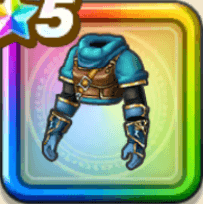

さすらいの剣士の服上
攻略班 9.0点 / イオ属性耐性+5%ギラ属性耐性+5%ヒャド属性耐性+5%イオ属性耐性+5%スキルの斬撃・体技ダメージ+5%デイン属性斬撃・体技ダメージ+4%ドルマ属性斬撃・体技ダメージ+4%会心率+2%【夜間】会心率+1%
くわしい特徴
【レベル別習得スキル】 Lv1イオ属性耐性+5% Lv5会心率+2% Lv8ギラ属性耐性+5% Lv10スキルの斬撃・体技ダメージ+5% Lv12デイン属性斬撃・体技ダメージ+4% Lv15ドルマ属性斬撃・体技ダメージ+4% Lv18【夜間】会心率+1% Lv20ヒャド属性耐性+5% Lv23すばやさ+6 Lv25イオ属性耐性+5% 【限界突破スキル】 1凸攻撃力+10 2凸すばやさ+12 3凸守備力+10 4凸さいだいHP+12